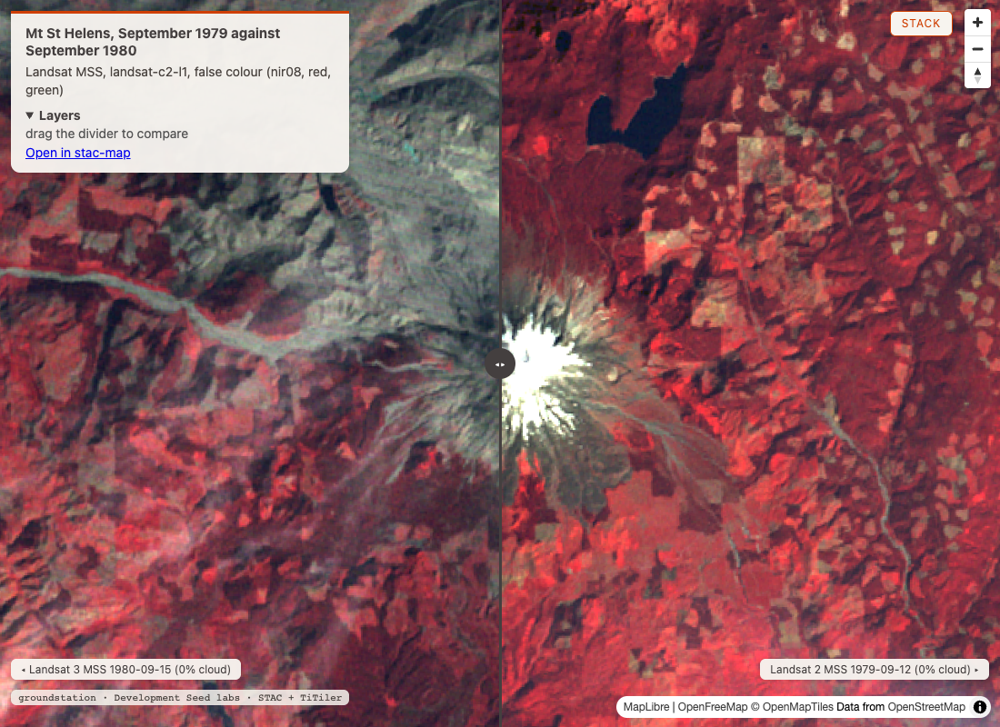
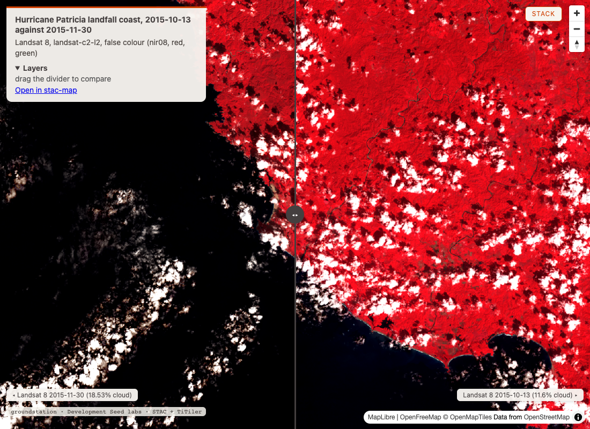
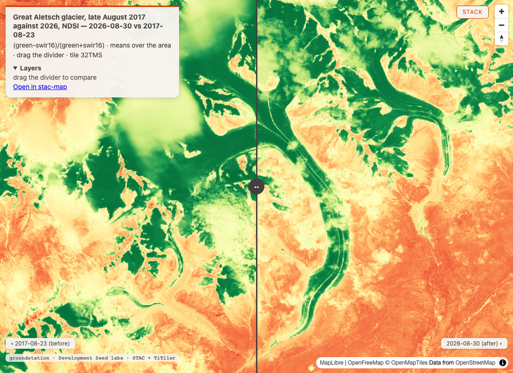
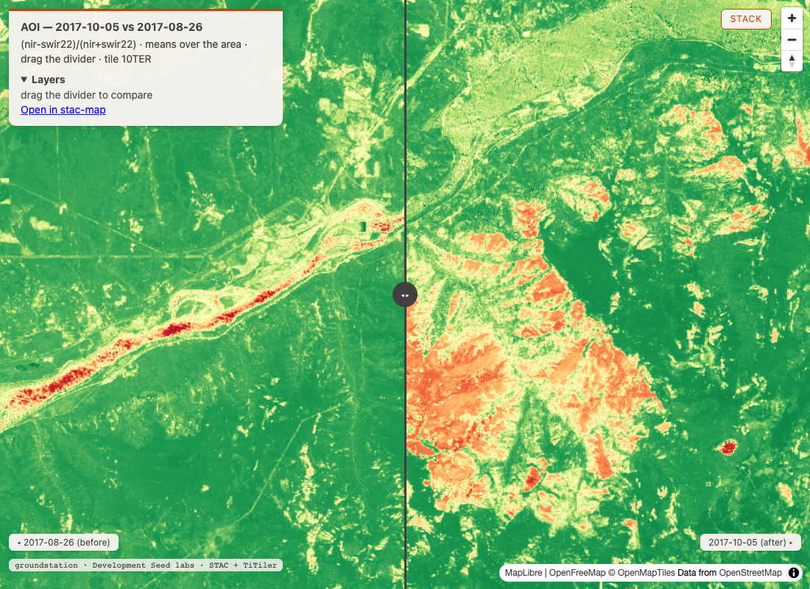
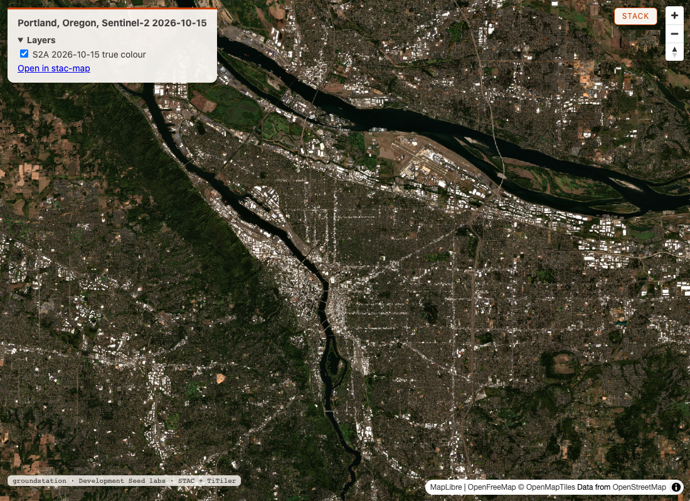

Round 1: 5 asks Danny brought, 2 of them on Landsat and 1 of them live
1
before the satellite age
Danny
Input
Mt St Helens eruption 1980
Our read
The 1980 eruption is in reach: Landsat 2 and 3 MSS scenes from the same orbit (path 50, row 28), 1979-09-12 and 1980-09-15, both 0.0% cloud and covering 100.0% of the box, and the median…
Learning → Works.

map: Mt St Helens swipe, 1979-09-12 against 1980-09-15 ↗full read
Our read
The 1980 eruption is in reach: Landsat 2 and 3 MSS scenes from the same orbit (path 50, row 28), 1979-09-12 and 1980-09-15, both 0.0% cloud and covering 100.0% of the box, and the median vegetation index over the box fell from 0.2691 to -0.0043. describe_collection says landsat-c2-l1 holds MSS scenes from Landsat 1 to 5, 1972 to 2013, and landsat-c2-l2 starts on 1982-08-22, so the L1 collection is the only one here that reaches 1980. The collection lists 4 bands: green, red, nir08 and nir09. Spring 1980 has no clear scene (6 scenes, 42.0% to 98.0% cloud), so the before is the summer of 1979, one year and 3 days before the after. On the index (nir08-red)/(nir08+red), the mean over the 0.30 by 0.20 degree box went from 0.2397 to 0.0737 and the median from 0.2691 to -0.0043. compare_dates could not be used ("0 after, 0 before"): it searches only Earth Search Sentinel-2. The index is on top-of-atmosphere radiance, so it is not comparable with a modern NDVI. The swipe map draws both MSS scenes in false colour; left of the divider the 1980 scene shows a grey blast zone north and west of the crater, and right of it the 1979 scene shows red forest and a snow-capped peak (my reading of the image).show the data
search_datasets("landsat", catalog="planetary-computer")
8 hits: hls2-l30, hls2-s30, jrc-gsw, landsat-c2-l1 (gsd 79.0), landsat-c2-l2 (gsd 30.0), nrcan-landcover, usgs-lcmap-conus-v13, usgs-lcmap-hawaii-v10
describe_collection("planetary-computer", "landsat-c2-l1")
description: "... acquired by the Multispectral Scanner System onboard Landsat 1 through Landsat 5 from July 7, 1972 to January 7, 2013"
extent.temporal: 1972-07-25T00:00:00Z to 2013-01-07T23:23:59Z
assets: red, green, nir08, nir09, mtl.txt, mtl.xml, mtl.json, qa_pixel, qa_radsat
describe_collection("planetary-computer", "landsat-c2-l2")
extent.temporal: 1982-08-22T00:00:00Z to null
search_imagery("planetary-computer", ["landsat-c2-l1"], bbox=[-122.35, 46.10, -122.05, 46.30], datetime_range="1979-06-01T00:00:00Z/1979-10-15T23:59:59Z", limit=20)
count: 20
LM02_L1TP_050028_19790912_02_T2 1979-09-12 cloud 0.0 covers_aoi_pct 100.0
recommended: LM03_L1TP_050028_19791009_02_T2 cloud 1.0 covers_aoi_pct 100.0
reason: 1.0% cloud, covers 100.0% of the area, and newest of 9 near-equal scenes; the clearest (0.0% cloud) is from 1979-09-12
search_imagery("planetary-computer", ["landsat-c2-l1"], bbox=[-122.35, 46.10, -122.05, 46.30], datetime_range="1980-03-01T00:00:00Z/1980-05-17T23:59:59Z", limit=20)
count: 6, cloud 42.0 to 98.0 on every scene
recommended: LM03_L1TP_049028_19800511_02_T2 cloud 43.0 covers_aoi_pct 100.0
reason: every scene is over 30% cloud, so this is the least bad: 43.0% cloud ...
search_imagery("planetary-computer", ["landsat-c2-l1"], bbox=[-122.35, 46.10, -122.05, 46.30], datetime_range="1980-05-19T00:00:00Z/1980-10-15T23:59:59Z", limit=20)
count: 20
LM03_L1TP_050028_19800915_02_T2 1980-09-15 cloud 0.0 covers_aoi_pct 100.0
recommended: LM03_L1TP_050028_19801003_02_T2 cloud 0.0 covers_aoi_pct 100.0
compare_dates(bbox=[-122.35, 46.10, -122.05, 46.30], window_before="1979-09-01T00:00:00Z/1979-09-30T23:59:59Z", window_after="1980-09-01T00:00:00Z/1980-09-30T23:59:59Z")
error: Not enough scenes: 0 after, 0 before. Widen windows or cloud limit.
compute_statistics("planetary-computer", "landsat-c2-l1", "LM02_L1TP_050028_19790912_02_T2", expression="(nir08-red)/(nir08+red)", bbox=[-122.35, 46.10, -122.05, 46.30])
mean: 0.23971887812599682 median: 0.26909910598497694 std: 0.14284241606258827
min: -0.45171256388740566 max: 0.6067167720451642
percentile_2: -0.10266729153162632 percentile_98: 0.4708027955685476
count: 133206.0 valid_percent: 100.0
scaling_applied: true, band_scaling unit: watt/steradian/square_meter/micrometer (red scale 0.61496 offset 4.18504, nir08 scale 0.53386 offset 4.06614)
compute_statistics("planetary-computer", "landsat-c2-l1", "LM03_L1TP_050028_19800915_02_T2", expression="(nir08-red)/(nir08+red)", bbox=[-122.35, 46.10, -122.05, 46.30])
mean: 0.07367968841452258 median: -0.004299618482079602 std: 0.17681711953602808
min: -0.4883019846620005 max: 0.6074047393713877
percentile_2: -0.15247563813815915 percentile_98: 0.43590304671322494
count: 130390.0 valid_percent: 100.0
scaling_applied: true, band_scaling unit: watt/steradian/square_meter/micrometer (red scale 0.72559 offset 0.97441, nir08 scale 0.62756 offset 2.57244)
render_map("Mt St Helens, September 1979 against September 1980", bbox=[-122.35, 46.10, -122.05, 46.30], compare=True, layers=[LM02_L1TP_050028_19790912_02_T2 and LM03_L1TP_050028_19800915_02_T2, assets [nir08, red, green], rescale "0,100"], out_path="docs/img/ft20-st-helens-map.html")
map_path: docs/img/ft20-st-helens-map.html compare: true coverage_pct: 100.0
2 raster layers, tiles from planetarycomputer.microsoft.com/api/data/v1/mosaic/..., rescale_basis: given
Learning → Works. The catalog confirmed the 1972 MSS archive from describe_collection, not from memory; search_imagery returned 20 summer scenes each year, the limit asked for; compute_statistics and render_map both took landsat-c2-l1 items as they are. The one tool that could not help is compare_dates, which has no collection argument and searches Earth Search sentinel-2-l2a only (that is in its code; the output is the plain "Not enough scenes" error, not a reason). 2 things to know about the figure. First, the scaling compute_statistics applied is the item's own, and its unit is watt/steradian/square_meter/micrometer: this is an index on top-of-atmosphere radiance, not surface reflectance, so it is not comparable to a Landsat 8 or Sentinel-2 NDVI, and the 2 scenes come from 2 sensors (Landsat 2 and Landsat 3) with different gains. Second, the box holds forest, lakes and the cone, so the drop of 0.2734 in the median is the whole box, not the blast zone alone. Not checked: the share of the box that went from vegetated to bare (the tools give no per-pixel threshold count), sun angle and haze between 1979-09-12 and 1980-09-15, and the qa_pixel band. The first screenshot had the 1979 layer stop partway across the east and south of the frame; a retake with 8 more seconds after network idle drew it to the edges, so that was tiles still loading, not the scene's footprint.
describe_collection confirms MSS from 1972 · landsat-c2-l2 starts 1982-08-22 · band ids green, red, nir08, nir09 · no clear spring 1980 scene · compare_dates is Sentinel-2 only · median index 0.2691 to -0.0043 · swipe map of 2 MSS scenes
2
the strongest on record
Danny
Input
Hurricane Patricia 2015
Our read
Landsat 8 has the coast on 2015-10-13, 10 days before landfall, and on 2015-11-30, 38 days after, and the median vegetation index over the land box fell from 0.8712 to 0.8226, but the after…
Learning → Partly.

map: Patricia coast swipe, 2015-10-13 against 2015-11-30 ↗full read
Our read
Landsat 8 has the coast on 2015-10-13, 10 days before landfall, and on 2015-11-30, 38 days after, and the median vegetation index over the land box fell from 0.8712 to 0.8226, but the after scene is cloudier, so damage and cloud are not separated; the event feeds hold only current events and do not reach 2015. Both catalogs carry landsat-c2-l2 for 2015 and return the same 16 post-landfall ids. I kept to one Landsat 8 path and row (030047) on both dates: before at 11.6% cloud, after at 18.53% cloud, both covering 100.0% of the box. The first statistics box takes in ocean and its index ran from -1921 to 3894, so I moved to a smaller box further east, over land ([-104.98, 19.38, -104.82, 19.52]). There the median went from 0.8712 to 0.8226 (-0.0485) and the mean from 0.7701 to 0.7619. active_events found nothing for Patricia: EONET listed 0 open events in 30 days, and widening to 4100 days returned 1 open wildfire from 2025, not the hurricane.show the data
search_imagery("planetary-computer", ["landsat-c2-l2"], bbox=[-105.15, 19.25, -104.85, 19.55], datetime_range="2015-09-01T00:00:00Z/2015-10-22T23:59:59Z", limit=20)
count: 14 (Landsat 8 and Landsat 7, paths/rows 030046 and 030047)
recommended: LC08_L2SP_030047_20151013_02_T1 cloud 11.6 covers_aoi_pct 100.0
reason: 11.6% cloud but covers 100.0% of the area; the clearest scene (4.1% cloud) covers 74.2%; the newest, 2015-10-21, lost on cloud: 61.0%, over the 30% ceiling
search_imagery("planetary-computer", ["landsat-c2-l2"], bbox=[-105.15, 19.25, -104.85, 19.55], datetime_range="2015-10-24T00:00:00Z/2015-12-31T23:59:59Z", limit=20)
count: 16
LC08_L2SP_030047_20151029_02_T1 2015-10-29 cloud 74.6 covers_aoi_pct 100.0
LC08_L2SP_030047_20151114_02_T1 2015-11-14 cloud 21.18 covers_aoi_pct 100.0
LC08_L2SP_030047_20151130_02_T1 2015-11-30 cloud 18.53 covers_aoi_pct 100.0
LC08_L2SP_030047_20151216_02_T1 2015-12-16 cloud 9.67 covers_aoi_pct 100.0
recommended: LE07_L2SP_030047_20151122_02_T1 cloud 4.0 covers_aoi_pct 100.0
search_imagery("earth-search", ["landsat-c2-l2"], same bbox and window)
count: 16, the same 16 ids, the same recommended LE07_L2SP_030047_20151122_02_T1
compute_statistics("planetary-computer", "landsat-c2-l2", "LC08_L2SP_030047_20151013_02_T1", expression="(nir08-red)/(nir08+red)", bbox=[-105.15, 19.25, -104.85, 19.55])
mean: 0.3983058889430049 median: 0.5085614892971126 min: -1920.6000000002105 max: 3894.0000000033124
range_note: the index ran from -1921 to 3894, outside -1 to 1: pixels under digital number 7273 go below 0 after the -0.2 offset, so the index is undefined over them; ...
compute_statistics("planetary-computer", "landsat-c2-l2", "LC08_L2SP_030047_20151013_02_T1", expression="(nir08-red)/(nir08+red)", bbox=[-104.98, 19.38, -104.82, 19.52])
mean: 0.7700601022670406 median: 0.8711671851150569 std: 0.2313710182311324
min: -0.18447333710194103 max: 19.46319921491655
percentile_2: 0.10496506947550241 percentile_98: 0.9512650226616542
count: 229888.0 valid_percent: 100.0 scaling_applied: true (scale 2.75e-05, offset -0.2)
range_note: the index ran from -0.1845 to 19.46, outside -1 to 1: ...
compute_statistics("planetary-computer", "landsat-c2-l2", "LC08_L2SP_030047_20151130_02_T1", expression="(nir08-red)/(nir08+red)", bbox=[-104.98, 19.38, -104.82, 19.52])
mean: 0.7619496209832883 median: 0.8226314875027924 std: 0.22062774789967424
min: -29.14201914171033 max: 30.082269503546172
percentile_2: 0.14878211742903577 percentile_98: 0.8922580215683664
count: 229888.0 valid_percent: 100.0 scaling_applied: true
range_note: the index ran from -29.14 to 30.08, outside -1 to 1: ...
render_map("Hurricane Patricia landfall coast, 2015-10-13 against 2015-11-30", bbox=[-105.15, 19.25, -104.85, 19.55], compare=True, layers=[LC08_L2SP_030047_20151013_02_T1 and LC08_L2SP_030047_20151130_02_T1, assets [nir08, red, green], rescale "7500,25000"], out_path="docs/img/ft20-patricia-map.html")
map_path: docs/img/ft20-patricia-map.html compare: true coverage_pct: 100.0
active_events(bbox=[-105.15, 19.25, -104.85, 19.55], days=30, pad=2.0)
eonet: [] gdacs: [] all_clear: true
eonet_note: EONET listed 0 open events in 30 days
active_events(bbox=[-105.15, 19.25, -104.85, 19.55], days=4100, pad=2.0)
eonet: 1 event, "Wildfire in Mexico 1023698", 2025-04-21
gdacs: [] gdacs_note: GDACS current-events feed listed 100; 0 active within 4100 days inside the bbox
eonet_note: EONET listed 1 open events in 4100 days
Learning → Partly. The imagery side worked: the archive, the scene pick with its reasons, the statistics with a range_note that names the -0.2 offset, and a swipe map. The event side could not help, and that is a finding: active_events reads EONET's open events and GDACS's current-events feed (both named in its notes), so a closed 2015 storm is out of reach at any day count. On the figure, a fall of 0.0485 in the median is small, and the after scene is cloudier (18.53% against 11.6% scene-wide), and cloud lowers the index, so how much of the drop is wind damage and how much is cloud is not separable from these numbers (my reading). The 11.6% before is the cloud for the whole scene, not the box; the screenshot shows cloud over the land on both sides (my reading of the image). The land box still crosses some coast, which I read as why its max is 19.46 and 30.08 (my reading). Not checked: a cloud mask from qa_pixel, the Landsat 7 2015-11-22 pick (4.0% cloud, passed over to keep to one Landsat 8 path and row), and the damage track itself against a published survey.
landsat-c2-l2 on both catalogs for 2015 · same path and row before and after · range_note on an ocean box · median index 0.8712 to 0.8226 on land · active_events holds open events only, no 2015 storm · swipe map
3
a claim the tools cannot weigh
Danny
Input
Switzerland's glaciers are disappearing at an alarming rate, losing more than 5% of their ice volume in 2026 alone
Our read
Imagery can show the glacier's surface on a late-summer day, not its ice volume: over the Great Aletsch glacier the mean snow and ice index (NDSI) rose from 0.2108 on 2017-08-23 to 0.2275…
Learning → Partly.

map: Great Aletsch NDSI swipe, 2017-08-23 against 2026-08-30 ↗full read
Our read
Imagery can show the glacier's surface on a late-summer day, not its ice volume: over the Great Aletsch glacier the mean snow and ice index (NDSI) rose from 0.2108 on 2017-08-23 to 0.2275 on 2026-08-30, +0.0167 (+7.9%), and that is snow cover on the day, not ice volume. The 5% figure is GLAMOS's ground measurement (the Swiss glacier monitoring network, working from stakes, surveys and elevation models), which these tools cannot test, so nothing here speaks for or against "more than 5% of their ice volume in 2026". What the tools can show is the snow and ice at the surface on 1 day each year. From mid August to the end of September under 20% cloud there was 1 scene in 2017 (4.10% cloud) and 10 in 2026; compare_dates picked 2026-08-30 (9.79% cloud) from the same tile, 32TMS, covering 100.0% of the box. The medians are close, 0.1048 and 0.1080. The swipe map shows ice on both sides of the divider, the tongue with its moraine stripes on the 2026 side, and pale patches that look like cloud over the upper left of the 2017 side (my reading of the image).show the data
search_imagery("earth-search", ["sentinel-2-l2a"], bbox=[7.95, 46.40, 8.10, 46.55], datetime_range="2017-08-15T00:00:00Z/2017-09-30T23:59:59Z", max_cloud_cover=20, limit=20)
count: 1
S2B_32TMS_20170823_0_L2A 2017-08-23 cloud 4.098656 covers_aoi_pct 100.0
search_imagery("earth-search", ["sentinel-2-l2a"], bbox=[7.95, 46.40, 8.10, 46.55], datetime_range="2026-08-15T00:00:00Z/2026-09-30T23:59:59Z", max_cloud_cover=20, limit=20)
count: 10, 2026-08-30 to 2026-09-27, cloud 0.015639 to 19.32295, all covers_aoi_pct 100.0
S2A_32TMS_20260830_0_L2A 2026-08-30 cloud 9.788409 covers_aoi_pct 100.0
compare_dates(bbox=[7.95, 46.40, 8.10, 46.55], window_before="2017-08-15T00:00:00Z/2017-08-31T23:59:59Z", window_after="2026-08-15T00:00:00Z/2026-08-31T23:59:59Z", expression="(green-swir16)/(green+swir16)", max_cloud_cover=20, out_path="docs/img/ft20-aletsch-map.html")
tile: 32TMS
before: S2B_32TMS_20170823_0_L2A 2017-08-23 cloud 4.098656 mean 0.2108 covers_aoi_pct 100.0
after: S2A_32TMS_20260830_0_L2A 2026-08-30 cloud 9.788409 mean 0.2275 covers_aoi_pct 100.0
delta: 0.0167 delta_pct: 7.9 (no caveat key)
scaling_note: scale 0.0001 and offset 0 applied for 2026-08-30 (Earth Search already took the -0.1 offset out of its pixels); scale 0.0001 and offset 0 applied for 2017-08-23
map_path: docs/img/ft20-aletsch-map.html
compute_statistics("earth-search", "sentinel-2-l2a", "S2B_32TMS_20170823_0_L2A", expression="(green-swir16)/(green+swir16)", bbox=[7.95, 46.40, 8.10, 46.55])
key: b1
mean: 0.21079088749626332 median: 0.10483525887890459 std: 0.5051479129320822
min: -0.8913270637408569 max: 0.9849074975657255
percentile_2: -0.559071729957806 percentile_98: 0.961034360609281
count: 262041.59375 valid_percent: 100.0 scaling_applied: true (no range_note key)
compute_statistics("earth-search", "sentinel-2-l2a", "S2A_32TMS_20260830_0_L2A", expression="(green-swir16)/(green+swir16)", bbox=[7.95, 46.40, 8.10, 46.55])
key: b1
mean: 0.2274835816027389 median: 0.10797342192691023 std: 0.4820724092858845
min: -0.834548513740886 max: 0.9871372031662269
percentile_2: -0.5401346452615226 percentile_98: 0.9497005988023951
count: 262041.59375 valid_percent: 100.0 scaling_applied: true (no range_note key)
Learning → Partly. The tools did their part: 2 matched Sentinel-2 scenes 9 years apart, an NDSI on correctly scaled bands, per-scene statistics, and a swipe map. They could not do what the sentence asks, because ice volume is not something these tools measure, and the card says so rather than letting a rise of 7.9% stand in for an answer. Why the index rose is not in the output; snow on the day, cloud (9.79% in 2026, and NDSI over cloud is not snow), and the box holding rock and forest as well as ice all move a mean like this (my reading). One mean over a 0.15 by 0.15 degree box is also not glacier area: the tools give no count of pixels above a snow threshold, which is the usual way to turn NDSI into extent. A small quirk: on Earth Search the statistics key comes back as
b1, not the expression. Not checked: the Rhône glacier, other late-summer dates in 2026 (10 scenes were there), a snow threshold area, and any GLAMOS figure.the volume claim named as untestable by these tools · same tile 32TMS 9 years apart · mean NDSI 0.2108 to 0.2275, +7.9% · medians 0.1048 and 0.1080 · statistics key b1 on Earth Search · NDSI swipe map
4
a fire Sentinel-2 saw
Danny
Input
Eagle Creek fire 2017, Columbia River Gorge
Our read
Sentinel-2 caught the Eagle Creek fire on both sides: compare_dates picked 2017-08-26 (cloud 0.319339) and 2017-10-05 (cloud 0.260885) from the same tile, 10TER, and the mean burn index…
Learning → Works.

map: Eagle Creek NBR swipe, 2017-08-26 against 2017-10-05 ↗full read
Our read
Sentinel-2 caught the Eagle Creek fire on both sides: compare_dates picked 2017-08-26 (cloud 0.319339) and 2017-10-05 (cloud 0.260885) from the same tile, 10TER, and the mean burn index (NBR) over the box fell from 0.6415 to 0.4305, -0.211 (-32.9%). The fire's start date, 2017-09-02, is not in the tool output; taking it from outside, the before scene is 7 days ahead of it and the after is 33 days past it. search_imagery found 3 August scenes and 2 October scenes under 20% cloud, all covering 100.0% of the box; compare_dates took the clearest of each and named the runner-up (2017-08-11 and 2017-10-30). compute_statistics on the same 2 scenes gives the same means, a median that fell from 0.7305 to 0.5782, and a percentile_2 that fell from -0.0242 to -0.5044. The index is NBR, (nir-swir22)/(nir+swir22), on scaled bands (scale 0.0001, offset 0). The swipe map shows the 2017-10-05 side with orange and red patches across the hills south of the river, and the 2017-08-26 side green except for the river itself (my reading of the image).show the data
search_imagery("earth-search", ["sentinel-2-l2a"], bbox=[-122.05, 45.55, -121.80, 45.70], datetime_range="2017-08-01T00:00:00Z/2017-08-31T23:59:59Z", max_cloud_cover=20, limit=20)
count: 3
S2A_10TER_20170831_0_L2A 2017-08-31 cloud 13.483338 covers_aoi_pct 100.0
S2B_10TER_20170826_0_L2A 2017-08-26 cloud 0.319339 covers_aoi_pct 100.0
S2A_10TER_20170811_0_L2A 2017-08-11 cloud 1.152866 covers_aoi_pct 100.0
recommended: S2B_10TER_20170826_0_L2A
reason: clearest (0.3% cloud) and best-covering (100.0% of the area), not a tradeoff; the newest, 2017-08-31, lost on cloud: 13.5% against the pick's 0.3%, outside the 5-point tie
search_imagery("earth-search", ["sentinel-2-l2a"], bbox=[-122.05, 45.55, -121.80, 45.70], datetime_range="2017-10-01T00:00:00Z/2017-10-31T23:59:59Z", max_cloud_cover=20, limit=20)
count: 2
S2A_10TER_20171030_0_L2A 2017-10-30 cloud 0.642735 covers_aoi_pct 100.0
S2B_10TER_20171005_0_L2A 2017-10-05 cloud 0.260885 covers_aoi_pct 100.0
recommended: S2A_10TER_20171030_0_L2A
reason: 0.6% cloud, covers 100.0% of the area, and newest of 2 near-equal scenes; the clearest (0.3% cloud) is from 2017-10-05
compare_dates(bbox=[-122.05, 45.55, -121.80, 45.70], window_before="2017-08-01T00:00:00Z/2017-08-31T23:59:59Z", window_after="2017-10-01T00:00:00Z/2017-10-31T23:59:59Z", expression="(nir-swir22)/(nir+swir22)", max_cloud_cover=20, out_path="docs/img/ft20-eagle-creek-map.html")
tile: 10TER
before: S2B_10TER_20170826_0_L2A 2017-08-26 cloud 0.319339 mean 0.6415 covers_aoi_pct 100.0 (runner_up S2A_10TER_20170811_0_L2A)
after: S2B_10TER_20171005_0_L2A 2017-10-05 cloud 0.260885 mean 0.4305 covers_aoi_pct 100.0 (runner_up S2A_10TER_20171030_0_L2A)
delta: -0.211 delta_pct: -32.9 (no caveat key)
scaling_note: scale 0.0001 and offset 0 applied for 2017-10-05; scale 0.0001 and offset 0 applied for 2017-08-26
map_path: docs/img/ft20-eagle-creek-map.html
compute_statistics("earth-search", "sentinel-2-l2a", "S2B_10TER_20170826_0_L2A", expression="(nir-swir22)/(nir+swir22)", bbox=[-122.05, 45.55, -121.80, 45.70])
key: b1
mean: 0.6414721513511206 median: 0.7305303392259914 std: 0.2284133983634622
min: -0.9500000000000001 max: 0.953206239168111
percentile_2: -0.024150943396226476 percentile_98: 0.8221288515406163
count: 157593.59375 valid_percent: 100.0 scaling_applied: true
compute_statistics("earth-search", "sentinel-2-l2a", "S2B_10TER_20171005_0_L2A", expression="(nir-swir22)/(nir+swir22)", bbox=[-122.05, 45.55, -121.80, 45.70])
key: b1
mean: 0.43049242929544157 median: 0.5782349756361668 std: 0.3955570736920874
min: -0.92 max: 0.9557721139430284
percentile_2: -0.504424778761062 percentile_98: 0.8343765045739048
count: 157593.59375 valid_percent: 100.0 scaling_applied: true
active_events(bbox=[-122.05, 45.55, -121.80, 45.70], days=30, pad=2.0) (run twice)
eonet: [] eonet_error: Server error '500 Internal Server Error' for url 'https://eonet.gsfc.nasa.gov/api/v3/events?days=30&status=open&bbox=...' (both tries)
gdacs: [] gdacs_note: GDACS current-events feed listed 100; 0 active within 30 days inside the bbox
all_clear: false all_clear_note: EONET did not answer, so an empty list is not all-clear
Learning → Works. This is the one card of the 5 where compare_dates fits: it returned 2 sentinel-2-l2a scenes from Earth Search, and here Sentinel-2 reaches 2017. It picked 2 scenes from 1 tile, scaled the bands, returned the delta with no caveat key, and wrote the swipe map. On the figure: the box is 0.25 by 0.15 degrees and holds the Washington shore and the river as well as the burn (my reading of the map), so a drop of 0.211 in the mean is the whole box, not the burn alone. The usual burn-severity measure differences the 2 NBR images pixel by pixel (dNBR), and the tools give a mean per scene, not a per-pixel difference or a burned area. A lower October sun may also move the index a little (my reading). active_events could not help: EONET answered with a server error (500) on both tries, and GDACS listed 0 active events within 30 days inside the box, so the feeds say nothing about 2017 and, with EONET down, not even all-clear today. Not checked: dNBR severity classes, the burned area against the published perimeter, and the scl cloud and shadow band.
compare_dates works for 2017 on Sentinel-2 · same tile 10TER before and after · mean NBR 0.6415 to 0.4305, -32.9% · median 0.7305 to 0.5782 · EONET 500 on both tries · NBR swipe map
5
live, the feeds today
Danny
Input
What's going on around Portland, Oregon right now: fires, floods, weather, and when the next clear satellite pass is
Our read
At 04:59 UTC on 2026-10-27: GDACS lists 0 active events within 30 days but EONET returned a server error, so it is not all-clear; it has rained since 2026-10-25 with more forecast; the next…
Learning → Partly.

map: Portland, Sentinel-2 2026-10-15, the clearest scene from 2026-10-12 to 2026-10-26 ↗full read
Our read
At 04:59 UTC on 2026-10-27: GDACS lists 0 active events within 30 days but EONET returned a server error, so it is not all-clear; it has rained since 2026-10-25 with more forecast; the next daylight passes are Sentinel-3B at 18:16, Sentinel-3A at 18:54 and Landsat 8 at 18:56 UTC on 2026-10-27, and Sentinel-2B and 2A at 19:12 and 19:22 UTC on 2026-10-28; the clearest recent scene is 2026-10-15 at 0.3% cloud. geocode put Portland at 45.5427 N, 122.6544 W from Gazet. weather_summary has 0.0 mm a day from 2026-10-19 to 2026-10-24, then 15.1 mm on 2026-10-25 and 13.3 mm on 2026-10-26, and 7.1, 11.55, 3.4, 3.3, 5.2 and 0.6 mm from 2026-10-27 to 2026-11-01, with highs of 10.0 to 12.8 C and wind no more than 14.8 km/h over those 6 days. next_pass looked 3 days ahead over its default open-data constellations, kept 8 daylight or radar passes and dropped 7 optical ones at night. search_imagery found 7 Sentinel-2 scenes from 2026-10-13 to 2026-10-26 and recommended S2A_10TER_20261015_0_L2A: "the newest, 2026-10-26, lost on cloud: 99.9%, over the 30% ceiling". The map shows the city clear on 2026-10-15, the Willamette running into the Columbia and the airport on the Columbia's south bank (my reading of the image).show the data
run at 2026-10-27T04:59:30Z
geocode("Portland, Oregon")
name: Portland (US, locality) lat 45.54270553588867 lon -122.65439224243164 source: gazet
bbox: [-122.83676147460938, 45.43252944946289, -122.4720230102539, 45.65288162231445]
active_events(bbox=, days=30, pad=1.0) (run at 04:59 and again at 05:02 UTC)
eonet: [] eonet_error: Server error '500 Internal Server Error' for url 'https://eonet.gsfc.nasa.gov/api/v3/events?days=30&status=open&bbox=...' (both tries)
gdacs: [] gdacs_note: GDACS current-events feed listed 100; 0 active within 30 days inside the bbox
all_clear: false all_clear_note: EONET did not answer, so an empty list is not all-clear
weather_summary(45.5427, -122.6544) grid cell 45.535984, -122.65944, elevation 55.0
date max C min C precip mm wind max km/h wind from
2026-10-19 16.6 8.3 0.0 8.2 168
2026-10-20 20.7 8.0 0.0 14.4 0
2026-10-21 20.3 6.7 0.0 8.3 325
2026-10-22 16.8 7.2 0.0 17.2 320
2026-10-23 14.5 6.0 0.0 9.3 171
2026-10-24 13.0 3.5 0.0 6.6 293
2026-10-25 10.7 7.1 15.1 19.1 123
2026-10-26 12.3 9.7 13.3 16.1 174
2026-10-27 12.2 8.7 7.1 13.7 209
2026-10-28 12.1 7.7 11.55 14.8 220
2026-10-29 12.8 5.8 3.4 6.1 130
2026-10-30 11.1 6.6 3.3 10.5 166
2026-10-31 10.0 5.5 5.2 6.1 160
2026-11-01 10.7 6.2 0.6 5.6 106
next_pass(45.5427, -122.6544) window_days 3, default constellations (open data), source developmentseed/eo-predictor
SENTINEL-3B 2026-10-27 18:16 UTC sun 26.7 track 595.4 km
SENTINEL-3A 2026-10-27 18:54 UTC sun 29.2 track 156.6 km
LANDSAT 8 2026-10-27 18:56 UTC sun 29.2 track 47.4 km
SENTINEL-3A 2026-10-28 18:28 UTC sun 27.3 track 340.9 km
SENTINEL-2B 2026-10-28 19:12 UTC sun 29.6 track 108.5 km
SENTINEL-2A 2026-10-28 19:22 UTC sun 29.9 track 132.1 km
SENTINEL-1C 2026-10-29 01:28 UTC sun -5.9 radar (day or night, sees through cloud)
SENTINEL-3B 2026-10-29 19:04 UTC sun 29.0 track 341.7 km
optical_passes_at_night: 7 (dropped)
note: swath geometry from live TLEs, not the acquisition plan; a pass is a possible capture, and imagery reaches public catalogs hours to a day later ...
search_imagery("earth-search", ["sentinel-2-l2a"], bbox=, datetime_range="2026-10-12T00:00:00Z/2026-10-26T23:59:59Z", limit=20)
count: 7, 2026-10-13 to 2026-10-26, all tile 10TER, all covers_aoi_pct 100.0
S2C_10TER_20261026_0_L2A 2026-10-26 cloud 99.918073
S2C_10TER_20261023_0_L2A 2026-10-23 cloud 51.688737
S2B_10TER_20261021_0_L2A 2026-10-21 cloud 1.533307
S2A_10TER_20261015_0_L2A 2026-10-15 cloud 0.335234
recommended: S2A_10TER_20261015_0_L2A
reason: clearest (0.3% cloud) and best-covering (100.0% of the area), not a tradeoff; the newest, 2026-10-26, lost on cloud: 99.9%, over the 30% ceiling
render_map("Portland, Oregon, Sentinel-2 2026-10-15", bbox=, layers=[S2A_10TER_20261015_0_L2A, assets [visual]], stack_facts=events, passes, out_path="docs/img/ft20-portland-map.html")
map_path: docs/img/ft20-portland-map.html stack_facts_ignored: [geocoded]
Learning → Partly. Of the 5 data calls, 4 answered with figures dated to the 04:59 UTC run: the geocode, the weather, the passes and the scene pick with its reason, and the map drew the pick. The fires and floods part is half answered: GDACS listed 0 active events within 30 days in the padded box, and EONET answered with a server error (500) at 04:59 and again at 05:02 UTC, which the tool reports as not all-clear rather than as nothing, so I cannot say there are no fires. The ask says the next clear pass, and next_pass predicts passes, not cloud: the passes on 2026-10-27 and 2026-10-28 fall on days forecast at 7.1 mm and 11.55 mm of rain, so they are likely cloudy, and the driest forecast day, 2026-11-01 at 0.6 mm, is past its 3-day window (my reading). It defaults to the open-data constellations and returned Sentinel-1, Sentinel-2, Sentinel-3 and Landsat 8 passes. At the run time the scene pick is 12 days old, because the newest, 2026-10-26, is 99.9% cloud. render_map dropped the geocoded flag I passed (stack_facts_ignored); my reading is that it only keeps the flag for a geocode made in the same process, and this one ran in another. Not checked: an air-quality or smoke feed, river levels, and EONET later in the day.
dated to 04:59 UTC on 2026-10-27 · GDACS 0 events, EONET 500 twice, not all-clear · rain 15.1 and 13.3 mm, more forecast · Sentinel-3B next at 18:16 UTC, Landsat 8 at 18:56 · clearest scene 2026-10-15 at 0.3% cloud · true-colour map
Reproduce
git clone https://github.com/dannybauman/groundstation && cd groundstation
bash scripts/doctor.sh # walks the setup chain, prints the fix
uv run evals/unit_checks.py # 209 offline checks
uv run scripts/field_test.py docs/field-test-2026-10-27-no20.cases.json